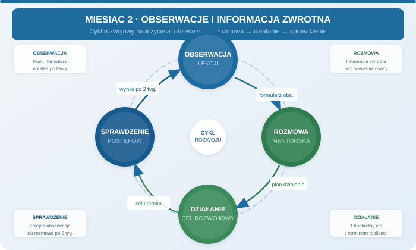

Zadania mentora
- Zaplanować obserwację lekcji mentora lub nauczyciela doświadczonego.
- Omówić jedną lekcję nauczyciela początkującego.
- Sprawdzić obciążenie: dziennik, wiadomości, dodatkowe zadania.
- Ustalić cele do końca półrocza.
Etap M2
Cel: przejść od orientacji organizacyjnej do rozwoju praktyki, obserwacji lekcji i pracy na celach rozwojowych.

Wpisz: obserwowaną lekcję, wnioski, cele do półrocza, zadania do zamknięcia i termin kolejnej rozmowy.
Nauczyciel sprawdza, które zadania były najtrudniejsze, jaki procent klasy osiągnął poziom podstawowy i co zmieni w nauczaniu przed kolejnym sprawdzianem.
Struktura: fakt, wpływ na naukę lub bezpieczeństwo, oczekiwane działanie, termin kontaktu. Nie zaczynaj kontaktu wyłącznie od skargi, jeśli można wcześniej przekazać neutralną lub pozytywną informację.